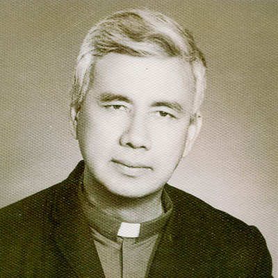
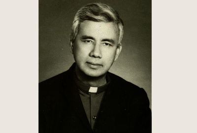
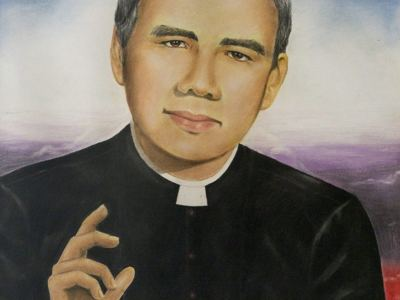

Isusovački blaženici
Svećenik
Bl. Rutilije Grande
1928. – 1977.
Salvadorski isusovac Rutilio Grande pratio je sjemeništarce i seoske zajednice. Evanđeoska zauzetost za dostojanstvo siromašnih dovela ga je u sukob s moćnicima.
Tekst je preveden i prilagođen uz pomoć umjetne inteligencije.

Izvor slike


Izvor slike


Izvor slike
- Spomendan
- 3. prosinca
- Zaštitništvo
- Nije navedeno u izvoru
- Životni vijek
- 1928. – 1977.
- Djelovanje
- Obrazovanje i poučavanje vjere · Siromašni i isključeni · Radnici i društvena pravda · Mučeništvo
- Razdoblje
- 20. stoljeće
- Napomena o izvoru
- Zaglavlje navodi 12/03/1977; datum je preuzet iz pripovjednoga teksta: 12. ožujka 1977.
- Datum rođenja
- 05.07.1928.
- Mjesto rođenja
- El Paisnal, Salvador
- Datum smrti
- 03.12.1977.
- Mjesto smrti/mučeništva
- Cesta između Aguilaresa i El Paisnala, Salvador
- Okolnosti smrti/mučeništva
- Ubijen u oružanoj zasjedi zajedno s Emanuelom Solórzanom i Nelsonom Rutilijem Lemusom.
- Uloga
- Svećenik
- Mučenik
- Da
- Ostale oznake
- Župnik u Aguilaresu; promicatelj prava siromašnih i župnih zajednica
- Pripadnost
- Isusovac
- Razlike u izvorima
- Datum smrti u podatcima zbirke: 03.12.1977. Raniji biografski izvor navodi 12.03.1977. Razlika izvora nije razriješena.
- Drugi oblici imena
- Rutilio Grande · Rutilio
Životopis
Rutilio Grande rođen je 5. srpnja 1928. u El Paisnalu u Salvadoru. Potjecao je iz seoskoga svijeta kojemu će kasnije posvetiti svoj apostolat. Godine 1941. ušao je u dijecezansko sjemenište, a četiri godine poslije zatražio primanje u Družbu Isusovu. Novicijat je obavio u Caracasu i 1947. položio redovničke zavjete. Formacija ga je vodila u Ekvador, zatim na nastavničku službu u Panamu te na filozofsko-teološki studij u španjolsku Oñu, gdje je zaređen 30. srpnja 1959.
Nakon studija na institutu Lumen Vitae u Bruxellesu vratio se u domovinu. U sjemeništu San José de la Montaña bio je odgojitelj i profesor pastoralne teologije. Buduće je svećenike uvodio u izravan susret sa župnim zajednicama i njihovim potrebama. Njegov su svećenički rad oblikovali Drugi vatikanski sabor i latinoamerička biskupska konferencija u Medellínu 1968. Želio je da se pastoralna obnova prepoznaje u životu Crkve, u dostojanstvu siromašnih i u odgovornosti vjernika za zajednicu.
Od 1972. kao župnik u Aguilaresu služio je osobito seljacima i ljudima na društvenome rubu. Poticao je sudjelovanje laika, katehezu, liturgijski život i zajedničko promišljanje životnih uvjeta. Njegova blizina ljudima nije bila odvojena od jasnoga razlikovanja crkvenoga poslanja i stranačkoga djelovanja. Ipak, obrana zlostavljanih i javno protivljenje represiji učinili su ga metom onih koji su u takvu pastoralu vidjeli prijetnju vlastitim povlasticama. U veljači 1977. javno je branio protjeranoga isusovca Marija Bernala.
Dana 12. ožujka 1977. putovao je radi euharistijskoga slavlja u sklopu priprave za svetkovinu svetoga Josipa. Na putu je automobil napadnut vatrenim oružjem. S njime su ubijeni katehist Manuel Solórzano i mladi Nelson Rutilio Lemus; troje djece preživjelo je napad. Grandeova smrt duboko je pogodila nadbiskupa Óscara Romera i cijelu mjesnu Crkvu. S dvojicom laičkih suputnika proglašen je blaženim 22. siječnja 2022. Njihovo zajedničko svjedočanstvo povezuje svećeničko služenje, laičku vjeru i ustrajnost uz ljude izložene nasilju.
Tekst je preveden i prilagođen uz pomoć umjetne inteligencije.
Pročitaj više na izvornoj stranici ↗